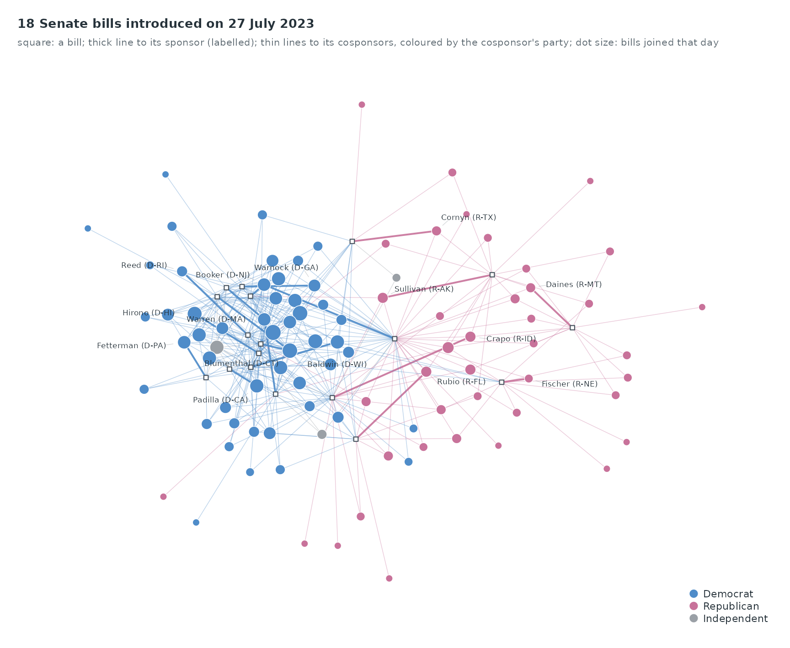
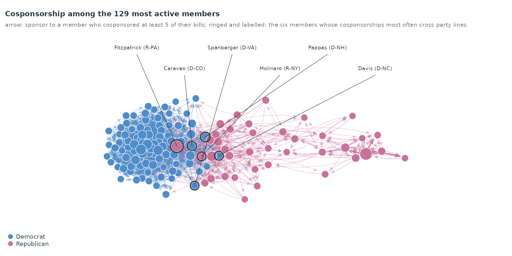
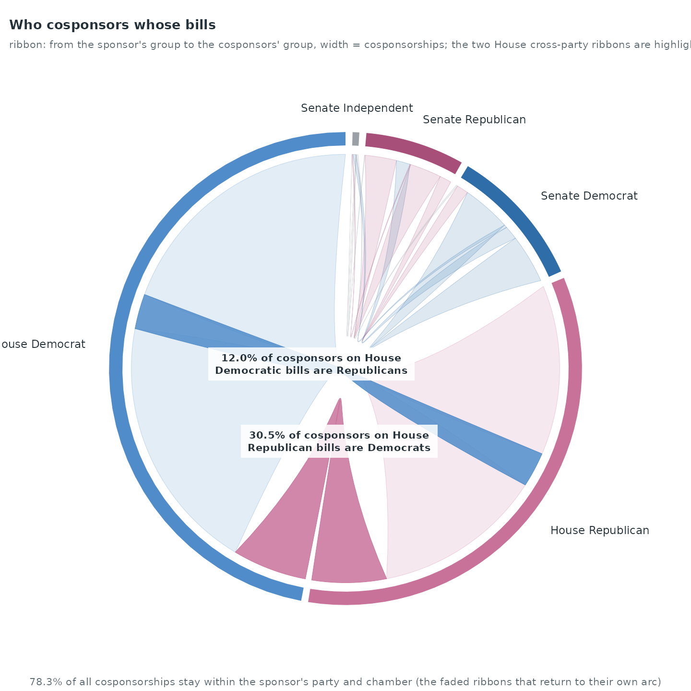
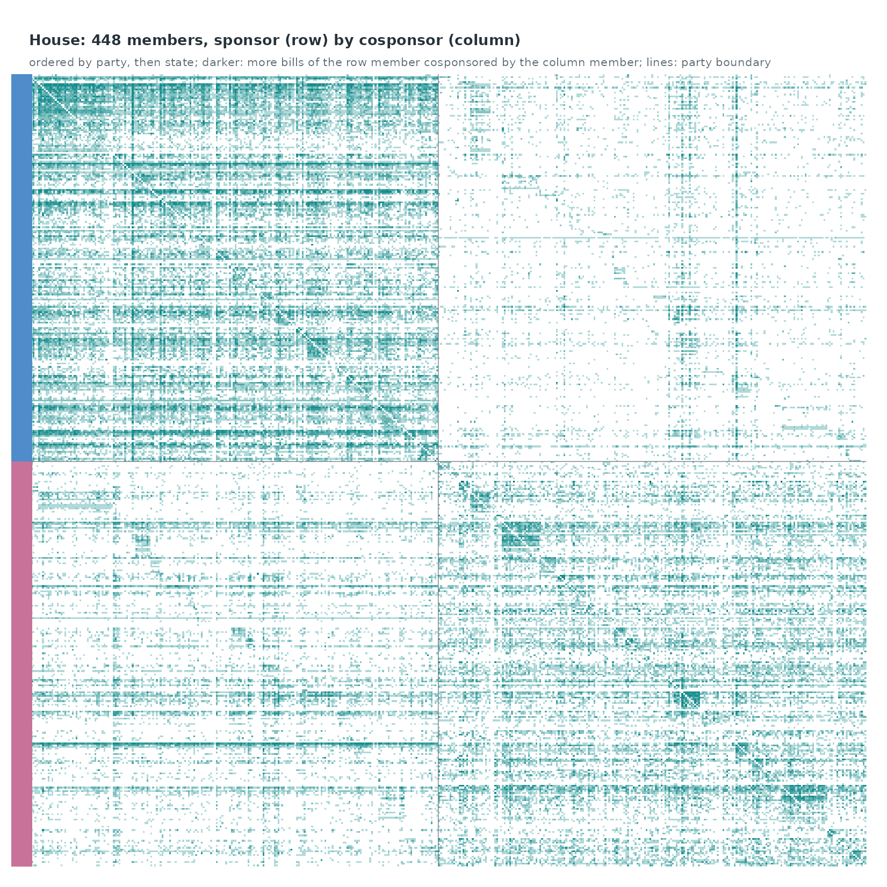
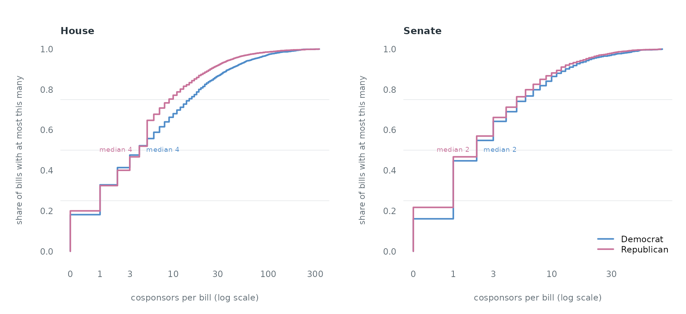
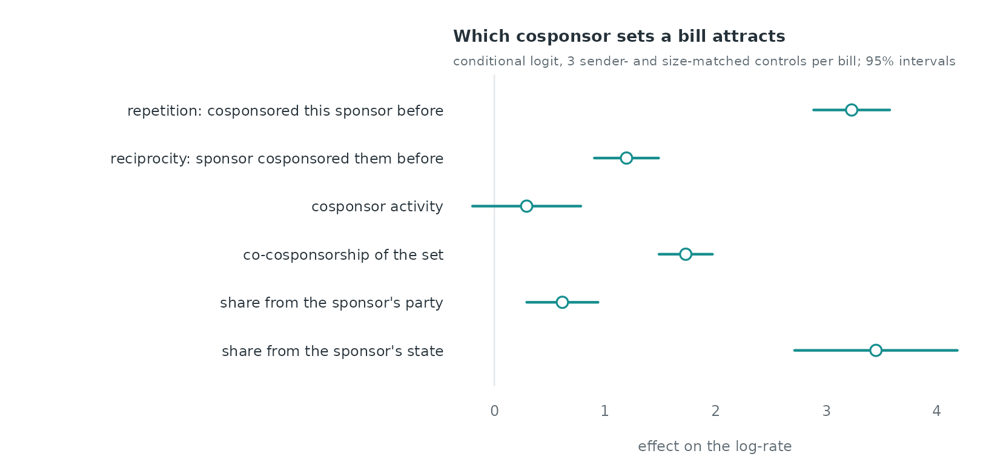
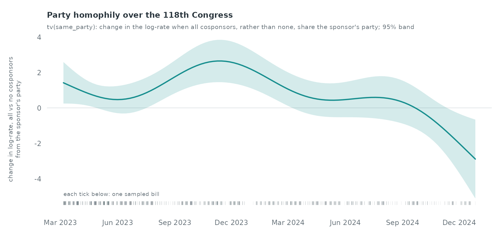

Case study: cosponsorship in the 118th Congress
Source:vignettes/articles/case-congress.Rmd
case-congress.RmdCase study: cosponsorship in the 118th Congress
A bill in the US Congress has one sponsor and any number of
cosponsors who sign on to it. Each bill is therefore a directed
hyperevent: a sender I (the sponsor) and a receiver set
J (the cosponsors) at a time t (the day it is
introduced). congress_bills_118 holds every House and
Senate bill of the 118th Congress (3 January 2023 to 3 January 2025) in
that form, and congress_members_118 gives each member’s
party and state.
data(congress_bills_118)
data(congress_members_118)
cb <- congress_bills_118
m <- congress_members_118
party <- setNames(m$party, m$bioguide_id)
state <- setNames(m$state, m$bioguide_id)
short <- setNames(paste0(sub(",.*", "", sub("^(Rep|Sen|Del|Resc)\\. ", "", m$name)),
" (", m$party, "-", m$state, ")"), m$bioguide_id)
chamber <- ifelse(grepl("^s", cb$bill), "Senate", "House")
sponsor <- vapply(cb$I, `[`, "", 1)
size <- lengths(cb$J)
c(bills = nrow(cb), house = sum(chamber == "House"), senate = sum(chamber == "Senate"),
members = nrow(m), with_cosponsors = sum(size > 0), median_cosponsors = median(size))
#> bills house senate members
#> 16213 10564 5649 553
#> with_cosponsors median_cosponsors
#> 13154 3One day of bills as a hypergraph
day_s <- cb[chamber == "Senate" & size > 0, ]
busiest <- names(which.max(table(day_s$date)))
h <- day_s[day_s$date == as.Date(busiest), ]
h <- h[order(-lengths(h$J)), ][seq_len(min(18, nrow(h))), ]
par(mar = c(1, 1, 3, 1))
hypergraph_coloured(h, party_col[party[unique(unlist(c(h$I, h$J)))]] |>
setNames(unique(unlist(c(h$I, h$J)))),
member_label = short[unique(unlist(h$I))])
title_left(sprintf("%d Senate bills introduced on %s", nrow(h), format(as.Date(busiest), "%d %B %Y")),
"square: a bill; thick line to its sponsor (labelled); thin lines to its cosponsors, coloured by the cosponsor's party; dot size: bills joined that day")
legend_groups(setNames(party_col, party_name[names(party_col)]), "bottomright")
The bills of 27 July 2023, the day with most Senate bills that have cosponsors, drawn as a hypergraph. A senator who cosponsors several of these bills ties them together, and most bills draw their cosponsors from the sponsor’s own party.
The two blocs and the members between them
pairs <- aggregate(list(w = rep(1, nrow(flows))), flows[, c("s", "j")], sum)
names(pairs) <- c("from", "to", "w")
act <- table(c(flows$s, flows$j))
top <- names(sort(act, decreasing = TRUE))[1:150]
strong <- pairs[pairs$from %in% top & pairs$to %in% top & pairs$w >= 5, ]
g <- igraph::graph_from_data_frame(strong[, c("from", "to")], directed = FALSE)
main <- names(which(igraph::components(g)$membership == which.max(igraph::components(g)$csize)))
strong <- strong[strong$from %in% main & strong$to %in% main, ]
lay <- layout_graph(strong, ids = main, seed = 3)
# bridging: share of a member's cosponsorships that go to the other party's bills
as_cos <- flows[!is.na(flows$sp) & !is.na(flows$jp), ]
bridge <- tapply(as_cos$sp != as_cos$jp, as_cos$j, mean)
bridge_n <- table(as_cos$j)
nodes <- data.frame(id = lay$id, x = lay$x, y = lay$y, size = as.numeric(act[lay$id]),
col = party_col[party[lay$id]], label = NA)
bridges <- names(sort(bridge[lay$id][bridge_n[lay$id] >= 50], decreasing = TRUE))[1:6]
par(mar = c(0.5, 0.5, 3, 0.5))
draw_network(nodes, data.frame(from = strong$from, to = strong$to, w = strong$w,
col = party_col[party[strong$from]]),
directed = TRUE, max_lwd = 2.4, ylim = c(-0.04, max(nodes$y) + 0.2))
# the bridging members: ringed, and labelled in a row above the graph with leader lines
b_ <- nodes[nodes$id %in% bridges, ]; b_ <- b_[order(b_$x), ]
points(b_$x, b_$y, pch = 21, bg = NA, col = ink, lwd = 2,
cex = 0.6 + 2.6 * sqrt(b_$size / max(nodes$size)) + 0.35)
lx <- seq(0.1, 0.9, length.out = nrow(b_)); ly <- max(nodes$y) + c(0.09, 0.16)[seq_len(nrow(b_)) %% 2 + 1]
segments(b_$x, b_$y, lx, ly - 0.012, col = ink, lwd = 0.7)
text(lx, ly, short[b_$id], cex = 0.62, col = ink, pos = 3, offset = 0.15)
title_left(sprintf("Cosponsorship among the %d most active members", nrow(lay)),
"arrow: sponsor to a member who cosponsored at least 5 of their bills; ringed and labelled: the six members whose cosponsorships most often cross party lines")
legend_groups(setNames(party_col[c("D", "R")], party_name[c("D", "R")]), "bottomleft")
The layout separates the parties into two clusters. The labelled members are those (among members with at least 50 cosponsorships) whose cosponsorships most often go to the other party’s bills; they sit between the clusters. Across all bills, 21.7% of cosponsorships cross party lines.
Flows between parties and chambers
lab <- function(ch, p) paste(ch, party_name[p])
fl <- flows[!is.na(flows$sp) & !is.na(flows$jp), ]
a <- lab(fl$ch, fl$sp); b <- lab(fl$ch, fl$jp)
lev <- c(lab("House", c("D", "R")), lab("Senate", c("D", "R", "I")))
M <- as.matrix(table(factor(a, lev), factor(b, lev)))
chord_col <- setNames(c("#4F8CC9", "#C8729A", "#2E6DA8", "#A84F79", "#9AA0A6"), lev)
hD <- lab("House", "D"); hR <- lab("House", "R")
emph <- matrix(FALSE, length(lev), length(lev), dimnames = list(lev, lev))
emph[hD, hR] <- emph[hR, hD] <- TRUE
elab <- matrix("", length(lev), length(lev), dimnames = list(lev, lev))
elab[hD, hR] <- sprintf("%s of cosponsors on House\nDemocratic bills are Republicans", pct(M[hD, hR] / sum(M[hD, ])))
elab[hR, hD] <- sprintf("%s of cosponsors on House\nRepublican bills are Democrats", pct(M[hR, hD] / sum(M[hR, ])))
par(mar = c(0.5, 0.5, 3, 0.5))
chord_emph(M, chord_col, emph, elab)
title_left("Who cosponsors whose bills",
"ribbon: from the sponsor's group to the cosponsors' group, width = cosponsorships; the two House cross-party ribbons are highlighted")
mtext(sprintf("%s of all cosponsorships stay within the sponsor's party and chamber (the faded ribbons that return to their own arc)",
pct(sum(diag(M)) / sum(M))), side = 1, line = -0.6, cex = 0.68, col = ink_soft)
78.3% of cosponsorships stay within the sponsor’s party and chamber. In the House, 12.0% of the cosponsorships on Democratic bills come from Republicans and 30.5% of those on Republican bills come from Democrats.
The House as an adjacency matrix
hf <- flows[flows$ch == "House" & !is.na(flows$sp) & !is.na(flows$jp), ]
hm <- names(which(table(c(hf$s, hf$j)) >= 30))
ord <- hm[order(party[hm], state[hm], -as.numeric(table(c(hf$s, hf$j))[hm]))]
A <- matrix(0, length(ord), length(ord), dimnames = list(ord, ord))
k <- hf$s %in% ord & hf$j %in% ord
tab <- table(factor(hf$s[k], ord), factor(hf$j[k], ord))
A[] <- tab
heat_titled(A, groups = party[ord], colours = party_col)
title_left(sprintf("House: %d members, sponsor (row) by cosponsor (column)", length(ord)),
"ordered by party, then state; darker: more bills of the row member cosponsored by the column member; lines: party boundary")
Two dense blocks lie on the diagonal: the members of each party cosponsor each other’s bills. Within each block, small squares along the diagonal are state delegations, which cosponsor each other more than the rest of their party does.
Who gathers cosponsors
op <- par(mfrow = c(1, 2), mar = c(4, 4.4, 3, 1))
for (ch in c("House", "Senate")) {
plot(NA, xlim = c(0, log1p(max(size[chamber == ch]))), ylim = c(0, 1), axes = FALSE, xlab = "", ylab = "")
at <- c(0, 1, 3, 10, 30, 100, 300); at <- at[at <= max(size[chamber == ch])]
axis(1, at = log1p(at), labels = at, tick = FALSE, cex.axis = 0.75, col.axis = ink_soft, line = -0.5)
axis(2, las = 1, tick = FALSE, cex.axis = 0.75, col.axis = ink_soft, line = -0.5)
abline(h = c(0.25, 0.5, 0.75), col = rule, lwd = 0.8)
for (p in c("D", "R")) {
s <- log1p(size[chamber == ch & party[sponsor] == p])
e <- stats::ecdf(s); xs <- sort(unique(s))
lines(c(0, xs), c(0, e(xs)), type = "s", col = party_col[p], lwd = 2.2)
md <- median(expm1(s))
text(log1p(md), 0.5, sprintf("median %g", md), pos = if (p == "D") 4 else 2, cex = 0.62, col = party_col[p])
}
mtext("cosponsors per bill (log scale)", side = 1, line = 2.2, cex = 0.75, col = ink_soft)
mtext("share of bills with at most this many", side = 2, line = 2.6, cex = 0.72, col = ink_soft)
title_left(ch)
}
legend("bottomright", legend = party_name[c("D", "R")], col = party_col[c("D", "R")], lwd = 2.2, bty = "n", cex = 0.75)
par(op)Each curve is the share of a party’s bills with at most a given number of cosponsors. In the House, 18.1% of Democratic bills and 20.0% of Republican bills have no cosponsor at all.
A hyperevent model of cosponsorship
The model asks which cosponsor sets a sponsor’s bill attracts. For each bill the observed cosponsor set is compared with three control sets that keep the sponsor and the number of cosponsors and draw the cosponsors at random from the members of the same chamber (a sender- and size-matched case-control design; amorem does not yet sample hyperevent controls, so they are drawn here). Every statistic is computed from the bills introduced strictly before the bill’s day:
-
repetition: past bills of this sponsor that each
cosponsor joined, averaged over the cosponsors,
hyperedge_subrep(rho = 1, l = 1)on the sponsor’s bills; -
reciprocity: past bills of each cosponsor that the
sponsor joined, averaged,
hyperedge_activity(I = cosponsor, J = sponsor); - cosponsor activity: past cosponsorships of each cosponsor, averaged;
-
co-cosponsorship: past bills on which each pair of
the cosponsors signed together, averaged over pairs
(
hyperedge_subrep(rho = 2)on the cosponsor sets); - same party and same state: the share of cosponsors from the sponsor’s party and state.
Counts enter as log(1 + count).
eligible <- which(size >= 2 & size <= 40 & cb$time >= 60)
set.seed(118)
smp <- sort(sample(eligible, 2500))
c(eligible_bills = length(eligible), sampled = length(smp))
#> eligible_bills sampled
#> 8166 2500The model uses bills with 2 to 40 cosponsors introduced from the 61st day on (so that every bill has two months of history), and a random sample of 2,500 of the 8,166 such bills; the statistics of every sampled bill are computed from all earlier bills.
N <- nrow(cb)
by_sponsor <- split(seq_len(N), sponsor)
by_cosponsor <- split(rep(seq_len(N), size), unlist(cb$J))
logs_sponsor <- lapply(by_sponsor, function(i) cb[i, c("I", "J", "time")])
pool <- lapply(c(House = "House", Senate = "Senate"), function(ch)
sort(unique(c(sponsor[chamber == ch], unlist(cb$J[chamber == ch])))))
hstats <- function(s, J, t) {
prior_with <- function(j) { i <- by_cosponsor[[j]]; if (is.null(i)) integer(0) else i[cb$time[i] < t] }
# pairs of J that signed a past bill together: sum over past bills of choose(shared, 2)
shared <- tabulate(unlist(lapply(J, prior_with)), N)
c(repetition = if (is.null(logs_sponsor[[s]])) 0 else
hyperedge_subrep(logs_sponsor[[s]], I = s, J = J, t = t, rho = 1, l = 1),
reciprocity = mean(vapply(J, function(j) if (is.null(logs_sponsor[[j]])) 0 else
hyperedge_activity(logs_sponsor[[j]], I = j, J = s, t = t), 0)),
activity = mean(vapply(J, function(j) length(prior_with(j)), 0)),
copair = sum(choose(shared, 2)) / choose(length(J), 2),
same_party = mean(party[J] == party[s], na.rm = TRUE),
same_state = mean(state[J] == state[s], na.rm = TRUE))
}
cc <- do.call(rbind, lapply(seq_along(smp), function(k) {
i <- smp[k]; s <- sponsor[i]; J <- cb$J[[i]]; t <- cb$time[i]
others <- setdiff(pool[[chamber[i]]], s)
rows <- rbind(hstats(s, J, t), t(replicate(3, hstats(s, sample(others, length(J)), t))))
data.frame(stratum = k, event = c(1L, 0L, 0L, 0L), time = t, rows)
}))
for (v in c("repetition", "reciprocity", "activity", "copair"))
cc[[paste0("log_", v)]] <- log1p(cc[[v]])
nrow(cc)
#> [1] 10000The co-cosponsorship column uses the identity that the average over
all pairs of J of the number of past bills containing the
pair equals the sum, over past bills, of the number of pairs of
J they contain, divided by the number of pairs. On a few
rows it matches hyperedge_subrep() with
rho = 2 exactly:
ulog <- hyperedge_log(I = lapply(cb$J, function(x) if (length(x)) x else "-"),
J = replicate(N, character(0), simplify = FALSE), time = cb$time)
chk <- vapply(smp[1:5], function(i) c(
identity = hstats(sponsor[i], cb$J[[i]], cb$time[i])[["copair"]],
hyperedge_subrep = hyperedge_subrep(ulog, I = cb$J[[i]], t = cb$time[i], rho = 2, l = 0)), numeric(2))
round(chk, 4)
#> [,1] [,2] [,3] [,4] [,5]
#> identity 27.1667 11.2727 13.5417 3 17
#> hyperedge_subrep 27.1667 11.2727 13.5417 3 17
fit <- rem(event ~ log_repetition + log_reciprocity + log_activity + log_copair +
same_party + same_state,
data = cc, method = "clogit", stratum = "stratum")
est <- coef(fit)
se <- sqrt(diag(stats::vcov(fit$fit)))
round(cbind(estimate = est, se = se), 3)
#> estimate se
#> log_repetition 3.230 0.176
#> log_reciprocity 1.195 0.148
#> log_activity 0.292 0.250
#> log_copair 1.730 0.123
#> same_party 0.615 0.165
#> same_state 3.449 0.375
labels <- c(log_repetition = "repetition: cosponsored this sponsor before",
log_reciprocity = "reciprocity: sponsor cosponsored them before",
log_activity = "cosponsor activity",
log_copair = "co-cosponsorship of the set",
same_party = "share from the sponsor's party",
same_state = "share from the sponsor's state")
forest_titled(est, se, labels = labels[names(est)], col = pal[1])
title_left("Which cosponsor sets a bill attracts", "conditional logit, 3 sender- and size-matched controls per bill; 95% intervals")
All six effects are estimated jointly. A cosponsor set entirely from
the sponsor’s party, against one with none, multiplies the rate of the
bill by 1.8; one unit more of log(1 + repetition)
multiplies it by 25.27, and one unit more of co-cosponsorship by 5.64.
The co-cosponsorship effect is a hyperedge effect: it measures whether
the cosponsors have signed together before, which no statistic of single
sponsor–cosponsor pairs captures.
Does party homophily change over the two years?
A time-varying effect tv(same_party) lets the weight of
party vary with the bill’s date. The gam backend uses one
control per bill:
w <- widen_case_control(cc[, c("stratum", "event", "log_repetition", "log_reciprocity",
"log_activity", "log_copair", "same_party", "same_state")],
control_index = 1)
w$time <- cc$time[cc$event == 1][match(w$stratum, unique(cc$stratum))]
fit_tv <- rem(~ log_repetition + log_reciprocity + log_activity + log_copair +
same_state + tv(same_party, k = 6),
data = w, method = "gam", time = "time")
summary(fit_tv)$s.table
#> edf Ref.df Chi.sq p-value
#> s(.time):same_party 5.695964 5.955621 32.23308 2.042172e-05
d <- smooth_data(fit_tv$fit, 1)
d$x <- as.Date("2023-01-03") + d$x
op <- par(mar = c(3.6, 4.2, 3, 1))
plot(d$x, d$fit, type = "n", ylim = range(d$fit - 1.96 * d$se, d$fit + 1.96 * d$se, 0),
axes = FALSE, xlab = "", ylab = "")
abline(h = 0, col = rule, lwd = 1.2)
polygon(c(d$x, rev(d$x)), c(d$fit - 1.96 * d$se, rev(d$fit + 1.96 * d$se)), col = alpha(pal[1], 0.18), border = NA)
lines(d$x, d$fit, col = pal[1], lwd = 2.2)
axis.Date(1, at = seq(as.Date("2023-03-01"), as.Date("2025-01-01"), by = "3 months"), format = "%b %Y",
tick = FALSE, cex.axis = 0.75, col.axis = ink_soft)
axis(2, las = 1, tick = FALSE, cex.axis = 0.75, col.axis = ink_soft, line = -0.5)
mtext("change in log-rate, all vs no cosponsors\nfrom the sponsor's party", side = 2, line = 2.2, cex = 0.68, col = ink_soft)
rug(as.Date("2023-01-03") + w$time, col = alpha(ink_soft, 0.15), ticksize = 0.02)
text(min(d$x), par("usr")[3], "each tick below: one sampled bill", adj = c(0, -2.2), cex = 0.62, col = ink_soft)
title_left("Party homophily over the 118th Congress", "tv(same_party): change in the log-rate when all cosponsors, rather than none, share the sponsor's party; 95% band")
par(op)Each frame is a two-week window of Senate bills, and the bar strip under it marks the window in the whole record. The labelled senators are the three (among those with at least 50 cosponsorships) whose cosponsorships most often go to the other caucus. Over the fortnights with at least 100 Senate cosponsorships, the share that crosses caucus lines ranges from 16.3% (fortnight from 14 Feb 2023) to 37.1% (fortnight from 17 Dec 2024).
The curve is the weight of the same-party share at each date, holding
the other statistics fixed: 0.47 in June 2023 and 0.28 in September
2024. summary(fit_tv)$s.table tests whether it departs from
a constant.
Where to go from here
- Match controls on the sponsor’s party as well as the sponsor, so that the same-party effect compares sets the sponsor could plausibly recruit.
- Add
nl()effects of the statistics, as in Hyperedge models, to test whether repetition saturates. - Fit the House and the Senate separately: the Senate has 100 members and a denser cosponsorship network.